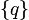
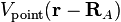

4. Electrostatic potential fitting¶
Contents
4.1. Introduction¶
The general idea behind the ESP fitting tools in Horton is to allow fitting and assessment of charges in isolated and 3D-periodic systems with compatible methodologies. Furthermore, the procedure is broken into different steps, such that one can carry out more specialized ESP fits.
Two related computations, fitting of charges and testing the quality of charges for the reproduction of the ESP, can be carried out once an ESP cost function is constructed. In Horton, this ESP cost function takes the following form:
where the symbols have the following meaning:
- : the atomic charges
- : the volume where the point-charge ESP is compared with the reference ESP. In periodic systems, this is the volume of a single primitive cell. In isolated systems, this is some volume surrounding the molecule.
- the weight function with range [0, 1] that selects the relevant parts of the volume for the ESP fit. In Horton, the weight function of Hu, Lu and Yang is used. [hu2007] This weight function is zero far away from and inside the atoms. It becomes one in the part of the electron density tail where non-bonding contacts are typically found. The weight function smoothly varies from 0 to 1. In the Hu-Lu-Yang paper, a pro-density is recommended for this purpose while we recommend to use a proper all-electron density or a corrected pseudo-density.
- is the ab initio ESP computed with some other program, e.g. Gaussian, CP2K, VASP, etc.
- are the atomic charges
-  is the electrostatic potential due to a unit point charge. In an isolated molecule, this is simply (in atomic units). For periodic systems, this part is quite a bit more involved.
 is a constant that may account for differences in
reference between the ab initio ESP and the point charge ESP.
The need for such a term was established in the REPEAT paper for ESP fitting
in 3D periodic systems. [campana2009]
is a constant that may account for differences in
reference between the ab initio ESP and the point charge ESP.
The need for such a term was established in the REPEAT paper for ESP fitting
in 3D periodic systems. [campana2009]
This approach differs from traditional ESP fitting methods (RESP, MKS, CHELPG) in the sense that the cost function is defined as an integral rather than a sum over sampling points. This idea comes from the Hu-Lu-Yang paper. [hu2007] The main difference with the REPEAT method [campana2009] is that the selected volume for the fit is defined by a smooth weight function. When this weight function is based on an all-electron density, there is no need to define atomic radii as is done usually in ESP fitting.
The cost function is obviously a quadratic function of the unknown parameters,
: the charges (and in the case of
a 3D periodic system), which we can always write as follows:
The script horton-esp-cost.py construct the matrix :math:A, the vector and the constant :math`C`. These results are stored in an HDF5 file that is subsequently used by the script horton-esp-fit.py to obtain ESP-fitted charges or by the script horton-esp-test.py to evaluate the cost function for a given set of charges.
In the output of these three scripts, the following quantities are reported (if applicable):

- (expressed as a percentage)
where the cost is computed with a certain set of charges (and the optimal
when applicable). The parameter is the
integral of the weight function. When these charges are the ESP fitted charges,
, and are minimal.
When the charges are all set to zero, one obtains the worst-case value for
,  and
. (One can can still obtain a higher
, but only with completely insensible charges. When that is
the case, it is better to set the charges to zero to model the ESP.)
and
. (One can can still obtain a higher
, but only with completely insensible charges. When that is
the case, it is better to set the charges to zero to model the ESP.)
4.2. horton-esp-cost.py – Set up an ESP cost functions¶
The script horton-esp-cost.py can be used to construct the cost function for the ESP fitting.
The recommended usage for an all-electron computation is as follows:
horton-esp-cost.py esp.cube cost.h5 --wdens=rho.cube --pbc={000|111}
where esp.cube is a Gaussian cube file containing the ESP data. The results will be written in cost.h5. The option --wdens=rho.cube implies that the weight function is constructed with the Hu-Lu-Yang method using the given density cube file. [hu2007] The opton --pbc can be used to construct a cost function for an isolated system (000) or a 3D periodic system (111).
When a pseudo-potential computation is used, the density cube file contains regions of low electron density close to the nucleus. These regions may not be excluded from the fit with the Hu-Lu-Yang weight function. Therefore, Horton allows one to build up the weight function as a product of several factors: , where the first one is typically the Hu-Lu-Yang weight function and additional weight functions can be included for every pseudo-core,
The recommended usage for a pseudo-potential computation is as follows:
horton-esp-cost.py esp.cube cost.h5 --wdens=rho.cube --pbc={000|111} --wnear Z1:r1:gamma1 [Z2:r2:gamma2 ...]
where one new option, --wnear, is used. This option takes at least one argument. One such argument must be present for every element in the system for which a pseudo potential is used. The parameter Z1 is the atomic number. The parameter r1 is the radius of the core region that one would like to exclude. The parameter gamma1 determines how quickly the weight factor for elements Z1 switch from 0 (inside a sphere with radius r1) to 1 (outside a sphere with radius r1). Both r1 and gamma1 must be given in angstrom.
The script horton-esp-cost.py has several more options. Run horton-esp-cost.py --help for more details.
4.3. horton-esp-fit.py – Fit charges to the ESP¶
Once a cost function is constructed, it can be used estimate atomic charges by minimizing the cost function. A bare-bones fit can be carried out as follows:
horton-esp-fit.py cost.h5 charges.h5
where the file cost.h5 is constructed with the script horton-esp-cost.py.
Useful ESP fitted charges typically involve much more advanced minimizations of the ESP cost function, for example by adding constraints, restraints, transforming to bond-charge increments, fitting to several different molecules concurrently, etc. Such advanced features are not supported in horton-esp-fit.py but one is free to implement these in customized scripts that use the the ESP cust functions obtained with horton-esp-cost.py.
4.4. horton-esp-test.py – Test the ESP quality of a given set of charges¶
The script horton-esp-test.py can be used to test the quality of a set of charges for the reproduction of the ESP. These charges are typically obtained with horton-wpart.py or horton-cpart.py. It can be used as follows:
horton-esp-test.py cost.h5 wpart.h5:hi/charges wpart_espcost.h5:hi
The first file, cost.h5, is generated with the script horton-esp-cost.py. The second file, wpart.h5 is generated (for example) with horton-wpart.py gaussian.fchk wpart.h5:hi hi atoms.h5. The last file, wpart_espcost.h5 will contain the output in the HDF5 group hi.